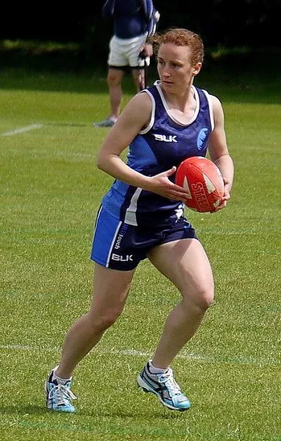
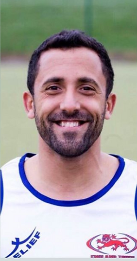
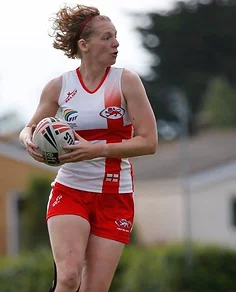

Created and hosted for free as part of the
Touch Rugby Club Network
Touch Rugby Club Network

West Wild Cats are the team to beat. Our coaches are committed to developing the best touch players in the West of England and are always on the lookout for talented players to help us get there.
Think you've got what it takes? We'd love to meet you! Read on to learn more about our upcoming events, regional coaches and teams in your area and see how you can become a part of the action.

From: Birmingham
Plays for: Revolution
Started playing Touch in 2010 as part of an NHS league, as a former netball player, I found there were lots of transferable skills and I fell in love with the game! I found my closest club at Warwick Touch where I started playing CTS, then played NTS with Oxford. I quickly progressed to regional selection which started my England career. I'm a proud mother and still find time to help the development of an emerging club in my region (Revolution touch) taking on a lead coaching role together with developing touch in the West.
As a regional Lead, my aim is to improve the representation of players living in our counties that are currently under-represented at a national and international level, with a focus at developing the players at a junior level. Through the development of coaches, referees and players, I hope to see West Wildcats continue to produce excellence in increasing numbers.

From: Guernsey
Plays for: Oxford Touch
I have played touch for about 15 years over 3 continents and enjoyed every minute of it. I still learn new things every day and enjoy the camaraderie that touch brings. I have been lucky to have great coaches and teammates that have inspired me to push harder and become a better player. It's great that I now get an opportunity to try to give back to grassroots touch enthusiasts and help to develop the potential England players of tomorrow.

Senior Womens Coach
Senior Womens Coach
Senior Mens Coach
These are the areas in which the country has been split up in to.
See the regions maps and contacts
Regional Leads, Regional Managers and Regional Coaches of the teams in each region are responsible for advertising and administering at least one 'open' trial which may be attended by any player eligible for that region before selecting their final squad. The format and timings may vary from region to region. Contact your lead for more information.
Regions are free to have whatever size training squad the regional coaches see as appropriate. The squads will need to be cut down to 16 players per team for the tournament
Nationals is used to develop players in each region who are eligible for England selection. Regional coaches are only able to select those players who are eligible to be selected for an England squad. All players must have full membership to play
Contact your regional lead for more details regarding the exemption process
Regional and assistant coaches are appointed by the regional leads. The Regional Leads are appointed by the Head of Development Pathways and the HP Team
This will be dependent on individual regions requirements. There are no restrictions imposed as regional coaches will know what works best for their region. If you wish to discuss this matter further please contact your regional coach
You need to be a part of the regional players' pathway to be considered for England
For more information see England Touch tournament history